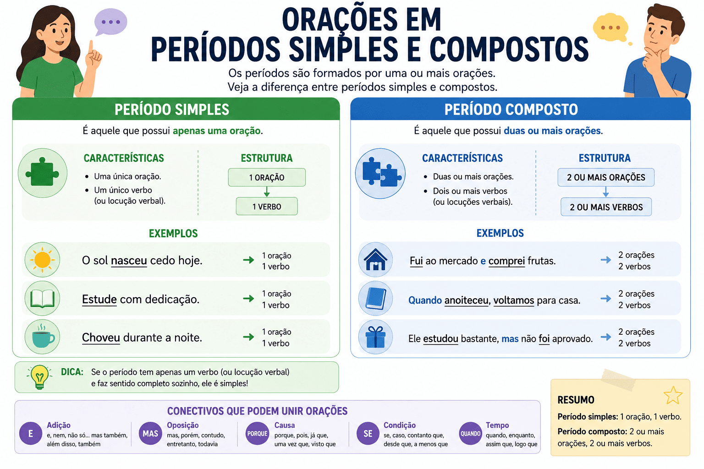

Período Simples e Composto: entenda a estrutura das orações
Para dominar a sintaxe da língua portuguesa, o primeiro passo é compreender como as frases se organizam ao redor dos verbos. É aqui que entra o estudo do período simples e do período composto.
Saber identificar a quantidade de orações em um enunciado não é apenas uma exigência comum em questões de gramática de concursos, do ENEM e do PAES UEMA, mas também uma habilidade fundamental para pontuar corretamente os textos e construir redações com fluidez e clareza.

Conceitos básicos: Frase, Oração e Período
Antes de classificarmos os períodos, precisamos diferenciar três conceitos que costumam causar confusão:
Frase
Todo enunciado de sentido completo. Pode ter verbo ou não.
Ex: Bom dia! / Silêncio! (Frases nominais).
Oração
Enunciado ou parte de um enunciado que se estrutura ao redor de um verbo ou uma locução verbal.
Período
É a frase estruturada em orações. Começa com letra maiúscula e termina com ponto final, exclamação ou interrogação.
A Regra de Ouro: O número de orações de um período é exatamente igual ao número de verbos ou locuções verbais que ele contém.
O que é Período Simples?
O período simples é aquele constituído por apenas uma oração. Isso significa que ele possui apenas um verbo ou uma locução verbal. Essa oração única recebe o nome de oração absoluta.
- O estudante leu o livro. (1 verbo = 1 oração = Período Simples)
- A prova começará em breve. (1 verbo = 1 oração = Período Simples)
- O sol nasceu radiante hoje. (1 verbo = 1 oração = Período Simples)
Cuidado com a extensão da frase! Um período pode ser enorme e continuar sendo simples, desde que tenha apenas um verbo.
Ex: Durante a madrugada fria de inverno no sul do país, os pequenos animais buscaram abrigo nas cavernas mais profundas da floresta. (Período longo, mas simples: apenas o verbo "buscaram").
O que é Período Composto?
O período composto é aquele formado por duas ou mais orações. Portanto, ele apresenta dois ou mais verbos (ou locuções verbais).
- Cheguei, vi e venci. (3 verbos = 3 orações = Período Composto)
- Eu quero que você estude mais. (2 verbos = 2 orações = Período Composto)
- Quando ele chegar, avisaremos a todos. (2 verbos = 2 orações = Período Composto)
Os tipos de Período Composto
As orações dentro de um período composto podem se relacionar de duas maneiras principais:
| Tipo de Relação | Características | Exemplo prático |
|---|---|---|
| Por Coordenação | As orações são independentes sintaticamente. Uma não exerce função sintática na outra. | Ele estudou muito, mas não passou na prova. |
| Por Subordinação | As orações são dependentes. Uma oração (subordinada) exerce função sintática em relação à outra (principal). | É importante que você estude. (A segunda oração é o sujeito da primeira). |
| Misto | Apresenta orações coordenadas e subordinadas no mesmo período. | Ele disse que viria, mas não apareceu. |
O perigo das Locuções Verbais nas provas
A locução verbal ocorre quando dois ou mais verbos (um auxiliar e um principal) se unem para expressar uma única ação. Para a contagem de orações, a locução verbal vale como apenas UM verbo.
Eu vou estudar amanhã.
Temos a locução "vou estudar" (auxiliar + infinitivo). Conta como apenas uma oração. Logo, é um Período Simples (oração absoluta).
A chuva estava caindo forte.
Temos a locução "estava caindo" (auxiliar + gerúndio). Conta como apenas uma oração. Logo, é um Período Simples.
Dica de Mestre: Ao analisar um texto na prova, circule todos os verbos. Em seguida, verifique se há locuções verbais e junte-as em um único círculo. O número de círculos no final será exatamente o número de orações do seu período!
Quiz — Período Simples e Composto
Questão 1 — A frase "Que dia maravilhoso!" classifica-se sintaticamente como:
Questão 2 — Assinale a alternativa que apresenta um período simples (oração absoluta):
Questão 3 — Em "O professor tinha corrigido as provas antes do recreio", temos:
Questão 4 — Leia: "A tempestade destruiu o telhado, alagou as ruas e derrubou árvores". Quantas orações há nesse período?
Questão 5 — Assinale a opção que contém um período composto:
Questão 6 — Em "Espero que você compreenda a situação, pois não explicarei novamente", classifica-se o período como:
Questão 7 — Leia: "Durante a noite fria e chuvosa de sexta-feira passada, na pequena cidade do interior paulista, os moradores assistiram ao espetáculo". O período em destaque é:
Questão 8 — A relação de independência sintática entre as orações de um período composto é característica das orações:
Questão 9 — Em "A menina estava escrevendo uma carta quando a energia caiu", quantas orações existem?
Questão 10 — "O período simples é também chamado de ____________, pois seu único verbo constitui todo o enunciado." A expressão que completa a lacuna é:
Resumo: Período Simples e Composto
- Frase: Qualquer enunciado de sentido completo (pode ou não ter verbo).
- Oração: Estrutura formada obrigatoriamente ao redor de um verbo ou locução verbal.
- Período Simples: Possui apenas um verbo ou locução verbal. É chamado de oração absoluta.
- Período Composto: Possui dois ou mais verbos/locuções. Pode ser organizado por Coordenação (independentes) ou Subordinação (dependentes).
- Locução Verbal: A união de dois verbos (ex: "estou estudando") conta como apenas UMA oração.
Conclusão
O segredo para dominar a análise sintática — e não perder pontos preciosos em questões de linguagens — é criar o hábito de "caçar" os verbos antes de ler o resto da frase. Ao identificar corretamente o número de verbos e locuções, você saberá exatamente quantas orações estruturam o seu período.
Nas aulas de redação, saber mesclar períodos simples (mais diretos e objetivos) com períodos compostos (que estabelecem relações de causa, consequência e condição) é o que garantirá coesão e maturidade ao seu texto.
Perguntas frequentes
Como saber quantas orações tem um período?
Basta contar o número de verbos e locuções verbais. Cada verbo ou locução equivale a uma oração. Se houver 3 verbos, haverá 3 orações no período.
Uma locução verbal conta como duas orações?
Não. A locução verbal (como "vou fazer", "tinha falado", "está chovendo") representa uma única ação, portanto, equivale a apenas uma oração.
Uma frase muito longa é sempre um período composto?
Não. O tamanho da frase não define o período. Uma frase gigante pode ter apenas um verbo (Período Simples), enquanto uma frase muito curta como "Cheguei, deitei" tem dois verbos (Período Composto).
Qual a diferença entre oração coordenada e subordinada?
A coordenada é independente; se você separá-la por ponto final, ela continua fazendo sentido (Ex: Acordei cedo e fui trabalhar). A subordinada depende da oração principal para ter sentido completo e exerce uma função sintática (Ex: Espero que você venha).
Conteúdos relacionados
Referências bibliográficas
- BECHARA, Evanildo. Moderna Gramática Portuguesa. Rio de Janeiro: Nova Fronteira.
- CEGALLA, Domingos Paschoal. Novíssima Gramática da Língua Portuguesa. São Paulo: Companhia Editora Nacional.
- CUNHA, Celso; CINTRA, Lindley. Nova Gramática do Português Contemporâneo. Rio de Janeiro: Lexikon.
Explore Outros Conteúdos
Continue seus estudos acessando outras seções do site Mestre Kira: